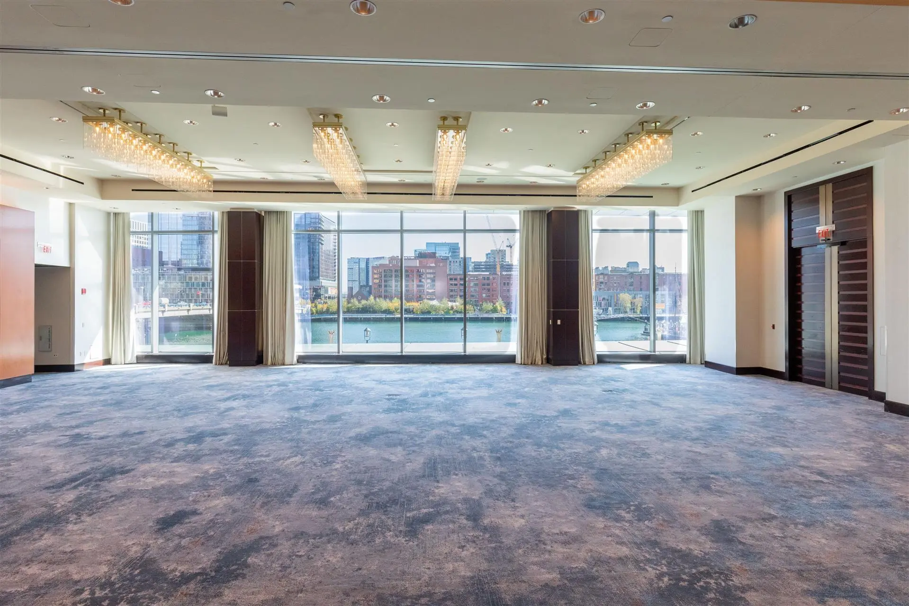
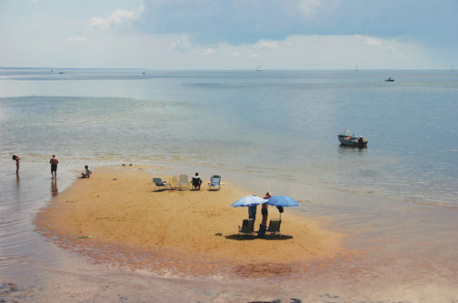

Boston waterfront
Boston looks lively, historic and easy to explore.
Boston a l’air animée, historique et facile à visiter.
This lesson feels like a real trip. You prepare before arrival, check in at the hotel, ask for room help, ask for recommendations, go to a restaurant, deal with a wrong meal, pay the bill, and find your way back to the hotel.
Cette leçon ressemble à un vrai voyage. Vous vous préparez avant l’arrivée, faites le check-in à l’hôtel, demandez de l’aide pour la chambre, demandez des recommandations, allez au restaurant, gérez un plat incorrect, payez l’addition et retrouvez votre chemin vers l’hôtel.Use the lesson like a real trip day. Start with arrival and hotel English, then restaurant English, then your final speaking task.
Utilisez la leçon comme une vraie journée de voyage. Commencez par l’arrivée et l’anglais de l’hôtel, puis l’anglais du restaurant, puis la tâche finale à l’oral.Location: Boston is a lively historic city, and Provincetown is a relaxed coastal town at the tip of Cape Cod.
Why it works: You get both sides of a real trip: Boston for transport, hotels and city life, and Provincetown for the harbor, restaurants, beaches and a relaxing coastal atmosphere.
Boston est une ville historique et animée, et Provincetown est une ville côtière détendue au bout de Cape Cod. Cet ensemble est idéal pour travailler le transport, l’hôtel, le restaurant et des situations de voyage réalistes.Boston looks lively, historic and easy to explore.
Boston a l’air animée, historique et facile à visiter.You can talk about the city, the water, transport and sightseeing.
Vous pouvez parler de la ville, de l’eau, du transport et des visites.
This image helps you practise check-in, room requirements and hotel complaints.
Cette image aide à pratiquer le check-in, les demandes pour la chambre et les réclamations à l’hôtel.
The coast looks calm, colourful and relaxing.
La côte a l’air calme, colorée et reposante.I would like to visit the dunes and discover a quieter side of Cape Cod.
J’aimerais visiter les dunes et découvrir un côté plus calme de Cape Cod.Open one category at a time. For each word, read the translation, the definition and the example sentence. Then say it aloud.
Ouvrez une catégorie à la fois. Pour chaque mot, lisez la traduction, la définition et l’exemple. Ensuite, dites-le à voix haute.Use the dropdowns to build natural travel sentences for arrival, dinner and check-out.
Utilisez les listes déroulantes pour construire des phrases naturelles sur l’arrivée, le dîner et le départ.| English | French | Example |
|---|---|---|
| on Monday | le lundi | We arrive on Monday. |
| in July | en juillet | We travel in July. |
| on 14 July | le 14 juillet | We have dinner on 14 July. |
| at 7:30 p.m. | à 19h30 | Our table is at 7:30 p.m. |
| for two nights | pour deux nuits | We are staying for two nights. |
These grammar blocks help you speak in real situations: requests, plans, complaints, directions and useful irregular verbs.
Ces points de grammaire vous aident à parler dans de vraies situations : demandes, projets, plaintes, directions et verbes irréguliers utiles.Use Could I...? and Could you...? in hotels and restaurants.
Utilisez Could I...? et Could you...? à l’hôtel et au restaurant.| Use | Model |
|---|---|
| room request | Could I have a quiet room, please? |
| help | Could you help me, please? |
| information | Could you recommend a restaurant? |
| service | Could we have the bill, please? |
Use going to when you already have a plan.
Utilisez going to quand vous avez déjà un projet.To complain clearly, choose the right subject first.
Pour vous plaindre clairement, choisissez d’abord le bon sujet.| Subject | Model complaint |
|---|---|
| There is... | There is a problem with the air conditioning. |
| There are... | There are no towels in the bathroom. |
| My room... | My room is too noisy. |
| The shower... | The shower does not work. |
| We... | We ordered water, not wine. |
| I... | I asked for a quiet room. |
| They... | They gave us the wrong meal. |
| English | French | Example |
|---|---|---|
| at the hotel | à l’hôtel | We are at the hotel now. |
| in the room | dans la chambre | There is no kettle in the room. |
| near the harbor | près du port | The restaurant is near the harbor. |
| from the hotel to the restaurant | de l’hôtel au restaurant | It is ten minutes from the hotel to the restaurant. |
| next to / across from | à côté de / en face de | The ATM is next to the pharmacy. |
| Base verb | Past simple | Travel example |
|---|---|---|
| go | went | We went to the restaurant. |
| take | took | We took a taxi. |
| see | saw | We saw the harbor and the monument. |
| eat | ate | We ate local food. |
| drink | drank | I drank iced tea. |
| buy | bought | We bought dessert. |
| find | found | We found the ATM. |
| have | had | We had a very nice room. |
This section follows the real order of a hotel stay, from booking to small problems and practical questions.
Cette section suit le véritable ordre d’un séjour à l’hôtel, de la réservation aux petits problèmes et questions pratiques.Choose the best sentence for reception.
Build: “Excuse me, there are no towels in the bathroom.”
Use the prompts to practise orally.
This section follows the real order of a restaurant experience, including drinks, sides, dessert, paying and asking how to get back to the hotel.
Cette section suit l’ordre réel d’une expérience au restaurant, avec les boissons, les accompagnements, le dessert, le paiement et la façon de retrouver son hôtel.Choose the best sentence for the restaurant.
Build: “Excuse me, I ordered water, not wine.”
Use the prompts to practise aloud.
Use hotel and restaurant English together. Imagine that you arrive in Boston first and then continue to Provincetown. First plan it with the builder, then use the speaking frame.
Utilisez ensemble l’anglais de l’hôtel et du restaurant. Préparez d’abord avec le constructeur, puis utilisez la trame orale.First, we are going to...
When we arrive, we are going to...
At the hotel, I am going to...
For dinner, we are going to...
If there is a problem, I am going to say...
At the end, we are going to...